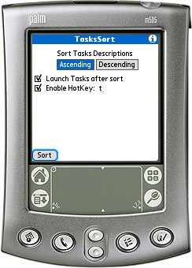
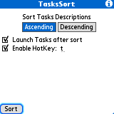

The builtin Tasks PIM in Palm OS 5 lacks the ability to sort the tasks list by description. TasksSort gives you the ability to sort the tasks list ascending or descending by description. TasksSort somewhat integrates with the Tasks program - you can launch TasksSort from Tasks and when the list is sorted go directly back to Tasks.
TasksSort is released under the GNU General Public License v2 and requires Palm OS 5.0 or better to work.
You can support this project by donating any amount to my Pay Pal account.
Select the sort mode: ascending or descending. Select the Launch Tasks after sort if you want to launch the Tasks PIM after sort. Select the Enable HotKey to enable the HotKey in Tasks. The HotKey will not be shown on any menus and you should select a key which is not already in use - T seems to be a safe choice.
To launch TasksSort from within Tasks simply draw the shortcut stroke followed by the HotKey.
Tap Sort to sort the tasks list.
v1.0 (2006-12-22) First public release.